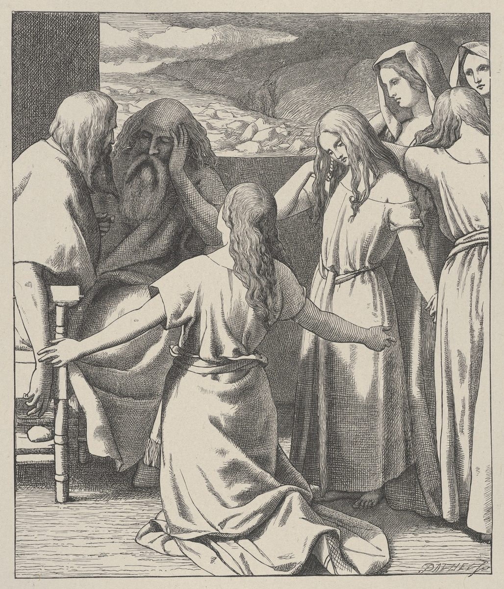

Números 36 — La Traducción Mister

⭐ El grabador ha captado el momento anterior a la respuesta, y esa respuesta es lo que este capítulo apela. La escena es Números 27 —las cinco hermanas acercándose a pedir la parte de su padre muerto— y Moisés aparece dibujado con la mano en la frente, cosa exacta: el versículo siguiente dice que llevó el caso de ellas delante de Jehová, porque no tenía sentencia que darles. Números 36 es la contrapetición y los matrimonios que la zanjan, así que esta es la lámina sobre la que discute el último capítulo del libro.
_MET_DP835633.jpg){kind=link}
Números 36:1-4 — «Restada»: la tercera petición del libro de Números y el verbo que comparten las tres
Se está apelando contra las ganadoras de Números 27, y los apelantes empiezan con la misma palabra con que empieza el capítulo que apelan. Nueve capítulos atrás las hijas de Zelofehad se acercaron —va-tiqravnah— y pidieron la parte de su padre muerto. Aquí los hombres de su propio clan se acercan, va-yiqrevu, el mismo verbo en masculino, y preguntan qué pasa con esa parte cuando ellas se casen. El capítulo está construido como espejo del que responde, y empieza a reflejarlo en su primera palabra. ⚠ La forma femenina de ese verbo, va-tiqravnah, aparece en exactamente dos versículos de toda la Biblia hebrea, y los dos son estas hermanas: Números 27:1, donde vienen a pedir, y Josué 17:4 (todavía no en estas páginas), donde vienen a cobrar. Los hombres se llevan el masculino una sola vez, aquí, en medio.
⚠⚠ Tres veces en este libro alguien pide algo a Moisés, y las tres peticiones usan el mismo verbo para lo que se les está haciendo: gara, ser RESTADO. En Números 9:7 unos hombres que habían tocado un cadáver preguntan lammah niggara —¿por qué hemos de ser restados, de modo que no presentemos la ofrenda de Jehová con todos los demás? En Números 27:4 las hijas preguntan lammah yiggara —¿por qué ha de restarse el NOMBRE de nuestro padre de su clan? Y aquí, en el v3, los del clan lo dicen dos veces y sobre la tierra. Tres agravios, un verbo —un contacto con un muerto, el nombre de un difunto, una parcela de suelo— y las tres veces Moisés lo lleva arriba y gana el que pide. A nadie en Números que diga «se nos está restando» se le responde que se equivoca.
⚠ Ninguna versión de ninguno de los dos estantes usa una sola palabra en los tres sitios, de modo que el hilo es invisible para todo lector que no lea hebreo. Un guión clasificó las trece versiones en los tres versículos y ninguna se repite. La ASV es la que más se acerca y aún así se rompe: lee ‘kept back’ en 9:7 y luego ‘taken away’ dos veces; la KJV gasta tres palabras distintas, ‘kept back’, ‘done away’ y aquí ‘taken from’. En el estante español la RV 1909 y la RV60 son las más próximas de las trece: coinciden consigo mismas en los dos últimos con «quitada» y se separan en el primero. ⚠ Esta traducción tampoco lo consigue, y lo dice en vez de fabricar un eco: imprime «excluidos» en 9:7 y «quitarse» en 27:4, porque el verbo hebreo abarca retener a una PERSONA y restar una CANTIDAD y ninguna de las dos lenguas del sitio tiene una palabra que cargue con las dos sin forzarla. Lo que la nota sí puede hacer es lo que ninguna versión hace: señalar la costura.
Por qué «restada» aquí, contra casi todo el estante. El v3 es un asiento contable y enuncia sus dos lados de un tirón: ve-nigre’ah … ve-nosaf, restado aquí, añadido allá. Ocho de las trece versiones imprimen la segunda mitad como «añadida» y luego echan mano de algo más flojo para la primera —la NWT 1984 ‘withdrawn’, la TNM 1987 «retirada», la Living Bible ‘the total area of our tribe will be reduced’—. Dos van en la otra dirección y buscan la aritmética: la Douay-Rheims, siguiendo la Vulgata, lo llama ‘a diminishing of our inheritance’, y la RV 1909 usa el término de contable «desfalcada». Imprimir «restada» frente a «añadida» mantiene las dos mitades de una misma suma en el mismo vocabulario, que es lo que hace el hebreo.
⚠ El v3 mete además las dos palabras hebreas para «tribu» en un solo versículo. Shevet aparece exactamente una vez en este capítulo —aquí, en boca de los propios peticionarios— mientras que matteh se lleva las otras catorce apariciones. Números 18:2 es donde este proyecto expuso la pareja.
⚠ El jubileo del v4 es la única vez que la palabra aparece en todo el libro de Números. Buscada consonánticamente en los treinta y seis capítulos devuelve un versículo, este; su casa es Levítico 25, ya en estas páginas, donde aparece trece veces. La inquietud de los del clan es precisa y es la de un abogado: el reinicio del año cincuenta, que devuelve toda tierra a sus poseedores originales, en este caso funcionaría al revés —confirmaría el traspaso en vez de deshacerlo, porque para entonces las mujeres serían las poseedoras originales. ⚠ La Douay-Rheims no deja que el lector lo deduzca: siguiendo el latín mete la definición dentro del versículo —‘when the jubilee, that is, the fiftieth year of remission, is come, the distribution made by the lots shall be confounded’— y el hebreo no tiene ni el año cincuenta ni la confusión.
Modales de tribunal, en la gramática. El v2 dice lo mismo dos veces, una en activa y otra en pasiva: Jehová mandó a mi señor, y mi señor fue mandado por Jehová. Moisés está delante de ellos y lo llaman adoni, mi señor, en tercera persona, dos veces —el registro de unos hombres que saben que van a discrepar de una sentencia suya. Nueve de las trece mantienen la tercera persona; cuatro rompen el marco y se dirigen a él directamente, y son las cuatro traducciones más libres del estante: la NIV, la NVI («Cuando el Señor le ordenó a usted repartir por sorteo la tierra»), la Living Bible y la Douay-Rheims, que lo hace en segunda persona jacobea, ‘hath commanded thee, my lord, that thou shouldst divide the land’ —y así conserva el tratamiento y pierde la distancia en la misma frase.
Números 36:5-9 — «Habla con razón»: el mismo veredicto pronunciado dos veces, y de quién son los ojos que deciden
⚠⚠ Moisés da a estos hombres la misma sentencia que dio a las hijas, con las mismas palabras. Números 27:7: ken benot Tzelophchad dovrot. Números 36:5: ken matteh venei-Yosef dovrim. La misma partícula, el mismo participio, femenino allí y masculino aquí, y nada más cambiado. Buscada en toda la Biblia hebrea, esa construcción —ken más este participio, como veredicto— aparece en exactamente dos versículos, y los dos son este mismo caso. Lo más parecido a un tercero es Éxodo 10:29, ya en estas páginas, donde Moisés le dice al faraón ken dibbarta, «bien has hablado» —pero eso es un verbo en tiempo acabado dirigido a un solo hombre, no la fórmula fija que aquí resuelve una reclamación. A las dos partes del pleito se les dice, en el mismo aliento del mismo libro, que tienen razón. Ninguna de las dos sentencias se retira; la segunda se encaja alrededor de la primera.
⚠ Cinco de las trece versiones dejan verlo y ocho no. La ASV lo conserva exactamente —‘speak right’ para las mujeres, ‘speaketh right’ para los hombres—, y lo mismo hacen la NWT 1984, su revisión de 2013, la NIV y la TNM 1987 («están hablando rectamente» / «está hablando rectamente»). Las otras ocho cambian de palabra entre los dos versículos y el eco muere. La KJV da a las hijas ‘speak right’ y a los hombres ‘hath said well’; Ginebra 1599 hace lo mismo y en la misma dirección, que es la línea Ginebra–King James mostrándose. La Living Bible asciende a los hombres y degrada a las mujeres en un solo movimiento: ellas ‘are correct’, ellos ‘have a proper complaint’. ⚠ En el estante español el eco se pierde entero: la RV 1909 y la RV60 dan a las hijas «Bien dicen» y a los hombres «habla rectamente», dos versiones de una sola fórmula; la NVI tiene «es algo justo» y luego «tiene razón»; y la TNM 2019 lo pierde donde su propia edición de 1987 lo guardaba. Esta traducción imprime «habla con razón» en ambos sitios a propósito.
⚠⚠ El v6 concede la elección a las mujeres y lo hace con un pronombre MASCULINO. La-tov be-eineiHEM —«del que sea bueno a los ojos de ellos»— lleva el sufijo masculino plural, y también lo lleva avihem, «su padre», cuatro palabras después. Eso no llamaría la atención si el capítulo fuera descuidado con ello, y no lo es: todos los demás sufijos de estos trece versículos que señalan a las hijas son femeninos —nachalatan en los vv3, 4 y 12, dodeihen en el v11, y en el v12 la mismísima expresión, «su padre», escrita avihEN. Y el capítulo usa también bien el masculino, en los dos únicos versículos que lo llevan: lahem en los vv3 y 4, «la tribu a la que pasen», donde el referente sí son los hombres con quienes se casan. Así que el sufijo masculino plural aparece en exactamente tres versículos del capítulo, en dos de ellos es correcto, y el tercero es el v6 —el versículo de quién elige. La forma femenina que el escritor se niega a usar aquí, be-eineihen, no es una forma que al hebreo le falte: aparece en la Biblia exactamente una vez, en Ester 1:17, ya en estas páginas, donde son esposas mirando a maridos, en el capítulo de una reina que no quiso acudir cuando la llamaron.
⚠ Once de las trece versiones borran los ojos, y la duodécima resuelve el pronombre calladamente. Solo dos testigos imprimen el modismo: la NWT 1984, ‘To whom it is good in their eyes they may become wives’, y la TNM 1987 —que va más lejos que ninguna otra versión de ninguno de los dos estantes y hace el pronombre explícitamente FEMENINO, «de quien, a los ojos de ellas, les parezca bien», resolviendo contra las consonantes sin decirlo. Las demás sustituyen los ojos por un verbo de preferencia: ‘to whom they think best’ (ASV, KJV, Ginebra 1599), «como a ellas les plazca» (RV60), «con quien quieran» (NVI). ⚠⚠ Aquí las dos ediciones de este sitio se separan a propósito, y conviene decirlo. El inglés dice ‘in their eyes’, que no tiene género y puede dejar la pregunta abierta; el español no puede, tiene que elegir, y elige seguir las consonantes: «a los ojos de ellos». No es una afirmación de que los ojos sean los de los hombres —el sufijo masculino plural puede referirse a un grupo mixto o genérico— sino la negativa a resolver en silencio, en la dirección que un lector moderno preferiría, algo que el texto deja sin resolver.
⚠ La regla va cercada con dos verbos, y el segundo es el del matrimonio. La heredad no debe sabab de tribu en tribu —dar vueltas, circular, cambiar de manos en un circuito— y los israelitas deben davaq a la tierra de sus padres. Davaq es el verbo de Génesis 2:24 (ya en estas páginas, todavía no en español), donde el hombre deja a su padre y a su madre y SE AFERRA a su mujer; es la palabra que Rut 1:14, ya en estas páginas, usa de Rut negándose a soltar a Noemí. En un capítulo dedicado por entero a quién se casa con quién, el aferrarse que se legisla es el de un hombre a un campo. Solo tres de las trece lo dejan ver, porque hace falta usar una misma palabra en ambos sitios: la ASV, la TNM 1987 («adherirse» en los dos) y la RV 1909 («se allegará á la heredad» frente a «allegarse ha á su mujer»). Para sabab, la RV 1909 y la RV60 son las más vivas de todo el estante: «no ande la heredad rodando de una tribu a otra», y de ahí viene la elección de esta traducción.
⚠ La Douay convierte una regla estrecha en una general, y es la Vulgata haciéndolo. El hebreo obliga a una sola clase de persona: la hija que ha heredado. La Douay-Rheims en los vv7-8 legisla para todo el mundo —‘For all men shall marry wives of their own tribe and kindred: And all women shall take husbands of the same tribe’— y añade una razón que el hebreo no da, que las tribus ‘be not mingled one with another’. Es toda una ley matrimonial para la nación, crecida a partir de una regla sucesoria para herederas.
Números 36:10-12 — Majlá, Tirsá, Hoglá, Milcá y Noá: cuatro listas de cinco hermanas, y solo esta cambia el orden
Los cinco nombres se enumeran cuatro veces en la Biblia y tres de las listas coinciden. Números 26:33 y Números 27:1, ya en estas páginas, y Josué 17:3 (todavía no en estas páginas) leen las tres Majlá, Noá, Hoglá, Milcá, Tirsá. Aquí, en el v11, la lista lee Majlá, TIRSÁ, Hoglá, Milcá, NOÁ —la segunda y la quinta han cambiado de sitio— y el versículo no comenta nada. Las otras tres listas están en una genealogía o en una fórmula de nombres; esta es la que va dentro de la frase que registra el matrimonio mismo, y es la que las reordena. ⚠ Las trece versiones reproducen fielmente el orden nuevo —desde el ‘Mahlah, Tirzah, and Hoglah, and Milcah, and Noah’ de la KJV hasta el «Majlá, Tirsá, Joglá, Milca y Noa» de la NVI y el ‘Maala, and Thersa, and Hegla, and Melcha, and Noa’ de la Douay-Rheims— y ninguna lo señala, de modo que quien no tenga delante las listas anteriores no sabrá nunca que hubo un cambio. Se cuenta que comentaristas judíos posteriores repararon en ello y ofrecieron explicaciones —que una lista va por edad y otra por otra cosa—, pero eso se reporta aquí, no se verifica, y el texto no da razón alguna.
⚠ La Noá de aquí no es el Noé del diluvio, y en hebreo ni siquiera es la misma palabra. La hija es No’ah, escrita con ayin; el hombre que construyó el arca es Noach, con jet. El español distingue «Noá» de «Noé» y el inglés no puede: escribe ‘Noah’ las dos veces y entrega al lector una colisión que el hebreo nunca tuvo. Con su hermana pasa algo parecido: Tirsá es una mujer aquí y más tarde una ciudad real en la serranía de Manasés —el territorio de su propia tribu tomando su nombre.
Se casan con sus primos, y el capítulo lo dice con una palabra de familia. Livnei dodeihen —a los hijos de sus tíos. La NIV lo comprime a ‘their cousins on their father’s side’ y la NVI a «sus primos paternos»; la ASV conserva la construcción del hebreo, ‘their father’s brothers’ sons’. ⚠ Vale la pena decir con claridad que el arreglo cuesta a las mujeres algo que la sentencia anterior les había dado: Números 27 les dio una parte sin condición ninguna, y este capítulo le pone una. Y vale la pena decir también que el texto las registra consintiendo —el v10 es una fórmula de cumplimiento, ken asu, así hicieron— y que lo que conservan es la tierra. El v12 cierra la cuenta con el vocabulario con que se abrió: su heredad quedó en la tribu de su padre, que es a la vez lo que pidieron los del clan en el v3 y lo que pidieron las hijas en 27:4.
Números 36:13 — «Por mano de Moisés»: el colofón que cierra Números y la palabra que añade al que cerró Levítico
El libro termina con una línea de firma, y tiene una gemela. Levítico 27:34, ya en estas páginas, cerró aquel libro: elleh ha-mitzvot asher tzivah YHWH et-Moshe … be-har Sinai. Números cierra con las mismas palabras iniciales y tres cambios: añade un segundo sustantivo, cambia una preposición y muda el lugar. Buscada en toda la Biblia hebrea, la expresión elleh ha-mitzvot aparece en exactamente esos dos versículos —el final de Levítico y el final de Números, y en ningún otro sitio.
⚠⚠ Levítico dice que Dios mandó a Moisés. Números dice que mandó POR MANO DE Moisés. Et-Moshe es un complemento directo; be-yad Moshe lo convierte en instrumento. Es una preposición pequeña y describe en qué se ha ido convirtiendo el libro a lo largo de treinta y seis capítulos: en el Sinaí Moisés recibía ley, y en las llanuras de Moab es el canal por el que llega —que es exactamente lo que pasa en este capítulo, donde Moisés transmite la sentencia a la boca de Jehová (v5) y en los trece versículos no aparece ni una sola fórmula de habla divina. Las trece versiones conservan aquí el «por mano»; y doce de las trece conservan el contraste, imprimiendo un simple «mandó a Moisés» allá en Levítico 27:34 —Ginebra 1599 es la única excepción, que lee ‘which the Lord commanded by Moses’ también allí y aplana los dos colofones en uno.
Y Números añade ha-mishpatim, los juicios —la palabra para una resolución dictada sobre un caso. Levítico termina solo con mandamientos. Este libro termina con mandamientos Y juicios, y la razón está en el capítulo que va encima: mishpat es la palabra que Números 27:5 usa cuando Moisés lleva el CASO de las hijas delante de Jehová. Números es el libro en el que a la ley se le hacen preguntas que no sabe responder —una segunda Pascua, un padre sin hijos varones, y ahora los matrimonios de sus hijas— y su último versículo nombra eso como una categoría aparte. ⚠ Las trece echan mano de siete sustantivos distintos: ‘judgments’ (KJV, Douay-Rheims), ‘ordinances’ (ASV, Living Bible), ‘laws’ (Ginebra 1599), ‘regulations’ (NIV), «estatutos» (RV 1909 y RV60) y «leyes» (NVI) —todos ellos pierden el sentido de jurisprudencia que el hebreo tiene y el capítulo demuestra. La única familia de traducciones que dice lo que la palabra está haciendo es la Traducción del Nuevo Mundo, y lo hace en los dos estantes y en sus dos ediciones: ‘judicial decisions’ en la NWT 1984 y su revisión de 2013, «decisiones judiciales» en la TNM 1987 y la suya de 2019.
⚠ El versículo lleva una marca que no aparece en ningún otro sitio de Números. La edición de Mechon-Mamre cierra este versículo con un signo que no usa para un salto de párrafo abierto ni cerrado, y que glosa como «una línea en blanco al final de algunos libros». Comprobado en los treinta y seis capítulos, aparece una vez —aquí— y lo mismo ocurre en el último versículo de Génesis, Éxodo, Levítico y Deuteronomio. Es una nota sobre su composición de página más que algo que este proyecto pueda verificar como práctica antigua, y la nota de Levítico 27:34 ya lo decía; pero la colocación se sostiene, cinco libros y cinco marcas. ⚠ Por lo demás el capítulo es una sola unidad masorética sin cortar: ni un solo salto de párrafo dentro de él, mientras que Números 35 tiene uno interior, Números 33 dos y Números 32 tres (y cada uno de esos cierra además con otro, cosa que este capítulo no hace: la marca del v13 es el signo de fin de libro, no un párrafo). Los escribas no dividieron el último argumento del libro.
Dónde se detiene Números. El campamento está exactamente donde lo puso Números 22:1 y donde lo ha dejado cada capítulo desde entonces: las llanuras de Moab, junto al Jordán, frente a Jericó. Cuarenta años de caminar, dos censos, una generación enterrada en el desierto, y el libro termina sin que nadie haya cruzado nada —con una resolución sucesoria sobre cinco mujeres y un campo, dictada por un hombre a quien ya se le ha dicho que él no pasará (Números 27:12-14). Deuteronomio 1, ya en estas páginas, empieza en el mismo sitio, en las mismas llanuras, y es un discurso en vez de un relato.
Notas sobre esta traducción
Decisiones. Ningún salto de párrafo masorético divide este capítulo; es una sola unidad, cerrada por la marca de fin de libro. Tres decisiones son deliberadas. Gara en los vv3-4 se imprime «restada», porque el v3 enuncia una resta y una suma en la misma frase y las dos mitades deben compartir vocabulario. Davaq en los vv7 y 9 es «aferrarse», la palabra que este proyecto ya usa en Rut 1:14 para el verbo de Génesis 2:24, de modo que el verbo del matrimonio se vea en un capítulo sobre matrimonios. Y sabab es «andar rodando», siguiendo a las dos Reina-Valeras, que aquí son las más literales de todo el estante.
⚠ Una divergencia deliberada entre las dos ediciones de este sitio. En el v6 el inglés imprime ‘in their eyes’, que no lleva género, y el español tiene que elegir uno: elige «a los ojos de ellos», el masculino de las consonantes, y lo explica en la nota. Las dos ediciones dicen lo mismo sobre el texto; solo una de las dos lenguas puede callarse la pregunta.
Biblioteca. Tres entradas nuevas de diccionario en los dos idiomas: gara, ser restado —el verbo de las tres peticiones del libro—; davaq, aferrarse; y sabab, andar rodando. Una entrada nueva de enciclopedia en los dos idiomas: Galaad hijo de Maquir, el HOMBRE, separado de la región con la que comparte nombre. Cuatro entradas existentes ampliadas, cada una en los dos idiomas: nachalah, yovel, Zelofehad y Manasés y Efraín.
⚠ Una corrección que el capítulo nuevo encontró en los viejos. Al escribir el v1 apareció un error vivo en el enlazado automático de este sitio: solo había una entrada de enciclopedia llamada Galaad, la región al este del Jordán, de modo que el enlazador la pegaba a cada «Galaad» que encontraba —incluidos Números 26:29 y Números 27:1, donde es un hombre en una genealogía. Partir la entrada en dos arregla esas dos páginas ya publicadas además de esta.
Ecos pagados. Números 35 prometió que este capítulo volvería a las hijas de Zelofehad, y vuelve. La fórmula del veredicto de Números 27 regresa palabra por palabra, y su mishpat reaparece en el último versículo del libro como categoría. La segunda Pascua de Números 9 se une a este capítulo y a Números 27 como la tercera de las tres peticiones del libro, todas con un mismo verbo. Y Números 32, que este proyecto ya señaló por pactar algo sin voz divina, encuentra aquí su respuesta en un capítulo que tampoco la tiene —y el silencio es un patrón, no una singularidad: siete de los treinta y seis capítulos del libro no llevan ninguna fórmula de habla divina (22, 23, 24, 29, 30, 32 y este).
Ecos plantados. Josué 17:3-6 (todavía no en estas páginas) es donde las hijas reciben de verdad la tierra: se acercan por segunda vez, en el mismo verbo femenino cuyo masculino toman aquí los hombres, y citan la sentencia de Moisés ante Eleazar y Josué. Y 1 Crónicas 7:15 (todavía no en estas páginas) nombra a Zelofehad una vez más, en una genealogía que solo recuerda que tuvo hijas.
⚠ Nota sobre el orden: Números está en estas páginas en los capítulos 1, 2, 3, 4, 5, 6, 7, 8, 9, 10, 11, 12, 13, 14, 15, 16, 17, 18, 19, 20, 21, 22, 23, 24, 25, 26, 27, 28, 29, 30, 31, 32, 33, 34, 35 y ahora 36 —el libro entero.